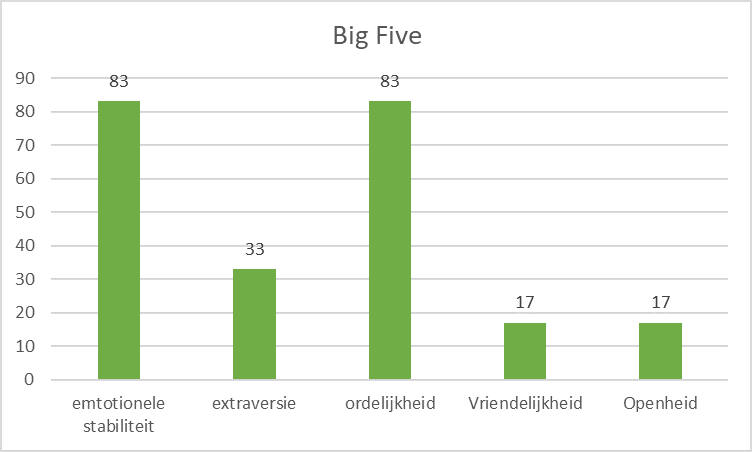

Smart methode
- Specifiek: Een onderzoek over mijn studieniveau met meerdere hoofdstukken maken.
- Meetbaar: Ik kan het onderzoek laten zien.
- Acceptabel: Ik denk dat het belangrijk is om goed na te denken over deze keuze, en mijn PLO coach vond het goed.
- Realistisch: Ik denk dat het realistisch is om te zeggen dat ik beter de keuze kan maken.
- Tijdgebonden: Dit leerdoel gelt voor op4.

Bewijslast
Ik heb een onderzoek gemaakt dat bestaat uit 4 hoofdstukken. De conclusie is alweer verouderd omdat het denkproces een constant proces is, en ik ook veel nieuwe informatie krijg.
Het onderzoek is te vinden op deze link
STARR-Reflectie
- Situatie: Een plo leerdoel uitwerken.
- Taak: Een onderzoek uitvoeren of het slimmer is om naar de universiteit te gaan.
- Actie: Het onderzoek uitgevoerd.
- Resultaat: Inzichten opgedaan die me helpen een definitieve keuze te gaan maken.
- Reflectie: Deze opdracht hielp mij om een belangrijke keuze te maken.